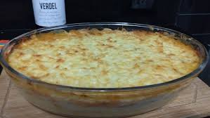

Camarão de Olinda

Ingredientes:
- 1 k de filet de camarão
- 1 1/2 de aipim
- 1 copo de requeijão cremoso
- 3 tomates maduros
- 2 cebolas
- 2 dentes de alho
- 1 xícara de coentro picado
- 200 ml de leite de coco
- 750 g de queijo coalho
- 1 limão sal e cominho a gosto
- Limpar os camarões e temperar com o limão, sal e cominho a gosto.
- Fazer um purê com o aipim cozido com pouco sal e o requeijão cremoso e espalhar em um forma de vidro.
- Rechear os camarões com a manteiga até ficarem dourados e espalhar sobre o purê de aipim.
- Fazer um molho com o tomate, a cebola, o alho(batidos no liquidificador), levar ao fogo e colocar o leite de coco e o coentro picado e espalhar sobre os camarões.
- Espalhar o queijo coalho ralado por cima e levar ao forno pra gratinar.
- obs: só colocar o leite de coco e o coentro ralado quando o molho já estiver cozido. deixar mais dois minutos no fogo, e depois tirar.